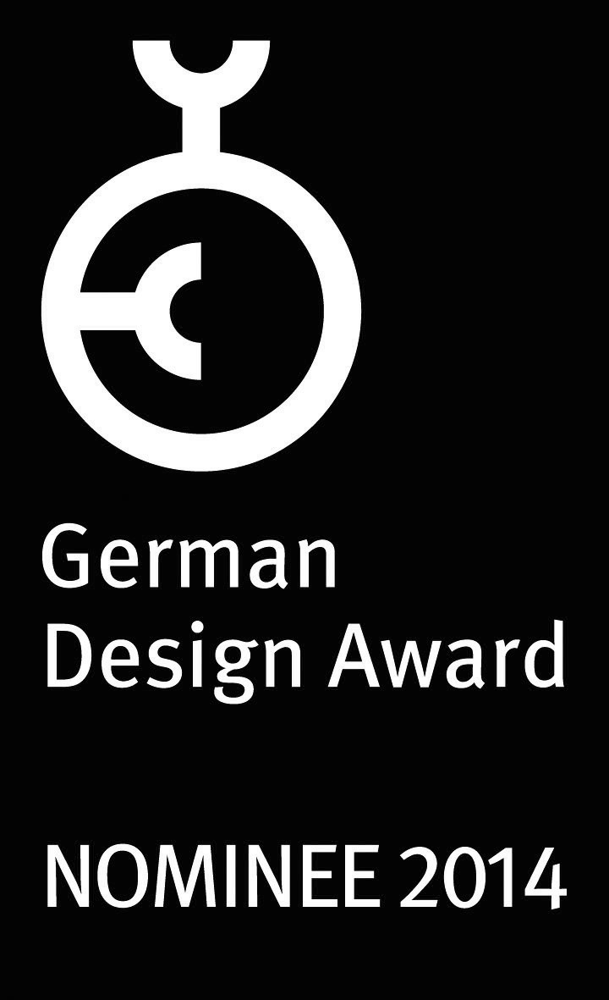
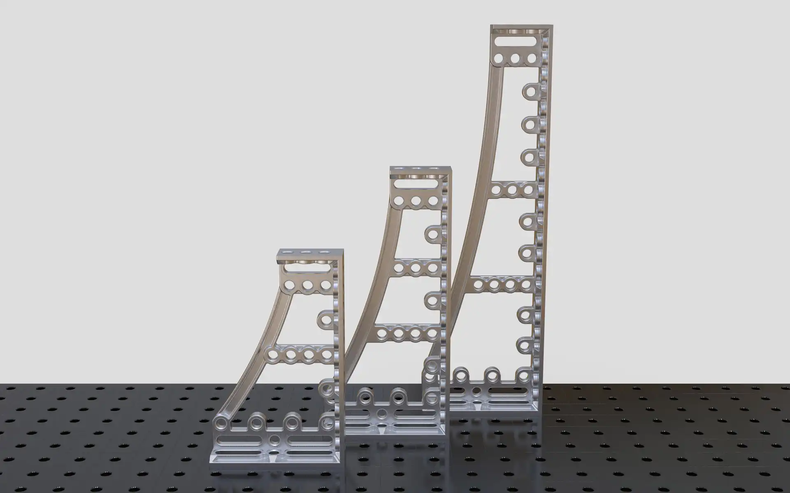
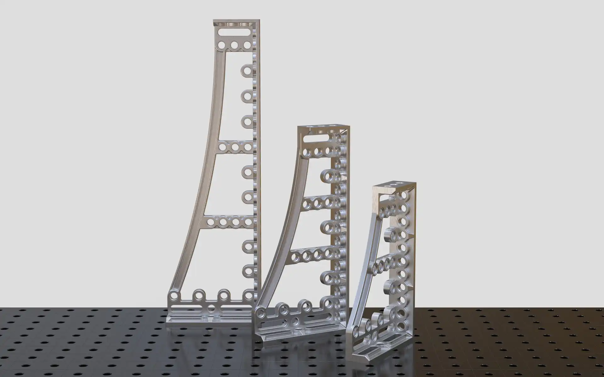
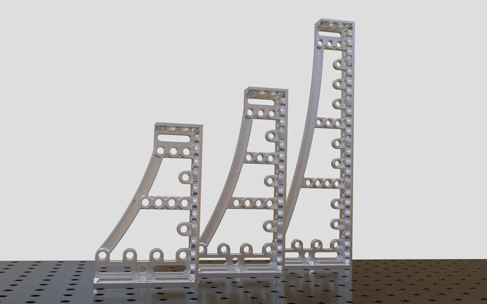
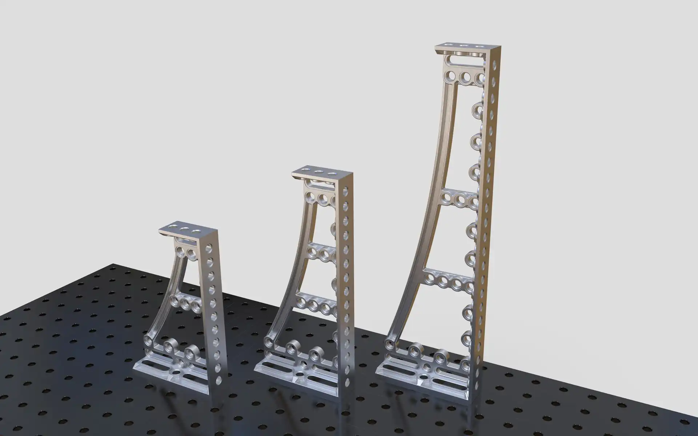
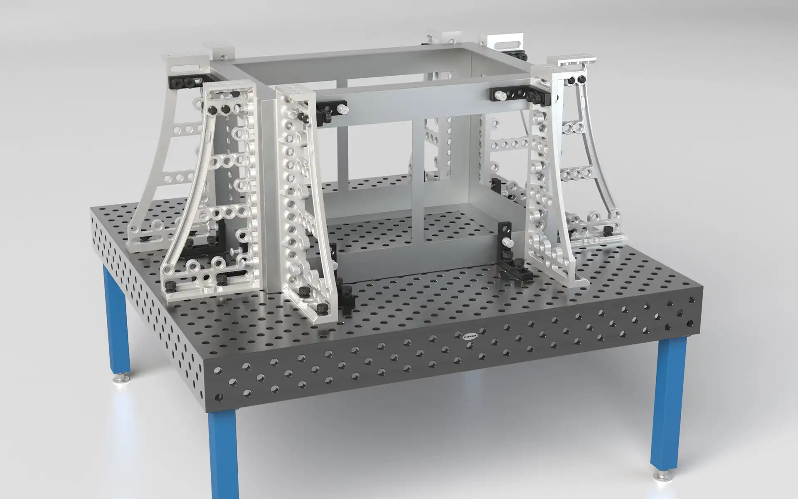
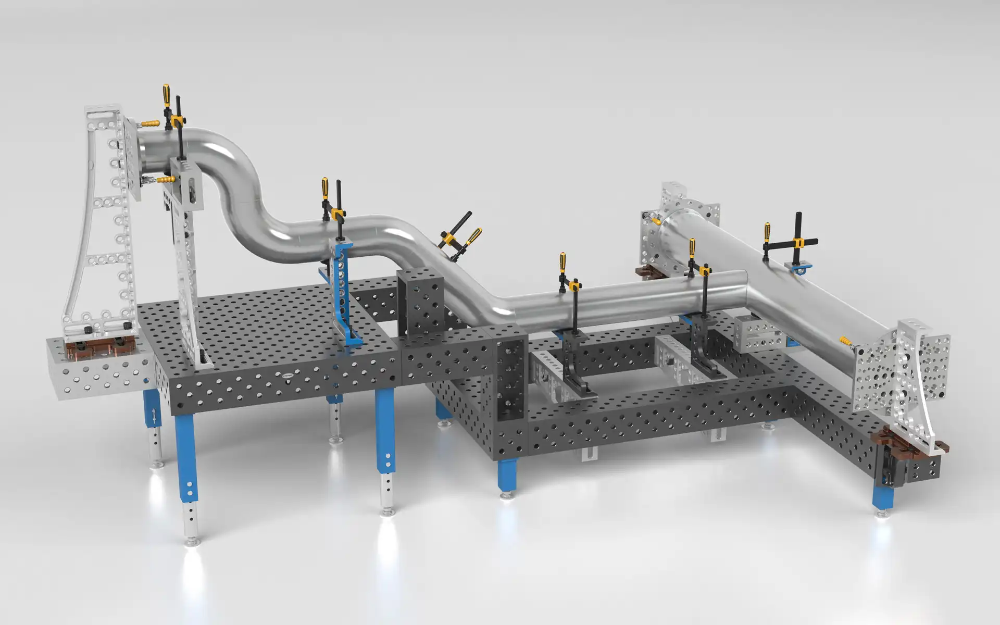

Siegmund Spannwinkel GK Alu-Titan
Clamping Square
Siegmund Spannwinkel GK Alu-Titan
Spannwinkel
The aluminium-titanium clamping squares are optimised on enormous reduction of weight while still
highest
solidness and their light weight ensures a gentle handling.
Installed on a console this robot type was developed especially to work from top to the ground. They are
used in welding and clamping techniques for accurately defined positioning and fixing of working parts.
They enable flexible clamping in all directions. Ranges of use are for example crane and bridge
constructions, prototype construction, car and metal industry.
The strained bar mortises powerful against the working piece and visualises strength. Cavities at the
whole square decrease the weight and therefore improve the daily handling. The clamping squares are
offered in different sizes from 300 mm up to 1200 mm height.
Selić Industriedesign service: Design concept, design sketches, CAD design support, CAD modeling, design
refinement, processing of design data for the engineering department
Die Alu-Titan Spannwinkel sind auf enorme Gewichtsersparnis bei höchster Festigkeit optimiert und sorgen
durch ihren Leichtbau für ein Anwender-schonendes Handling.
Die Winkel werden in der Schweiß- und Spanntechnik zum definierten Positionieren und Fixieren von
Werkstücken verwendet. Sie erlauben flexibles Spannen in alle Richtungen. Einsatzbereiche sind z.B. Kran-
und Brückenbau, Prototypenbau, Auto- und Metallindustrie.
Die durchgespannte Strebe stemmt sich kraftvoll dem Werkstück entgegen und visualisiert Stärke.
Aussparungen am gesamten Winkel reduzieren das Gewicht und verbessern somit zusätzlich das tägliche
Handling. Die Winkel sind in verschiedenen Größen von 300 mm bis 1200 mm Höhe erhältlich.
Selić Industriedesign Dienstleistung: Designkonzept, Designentwürfe, CAD-Design Unterstützung,
CAD-Modellierung und Detailgestaltung, Aufbereitung von Designdaten für die Konstruktion






Images © Bernd Siegmund GmbH